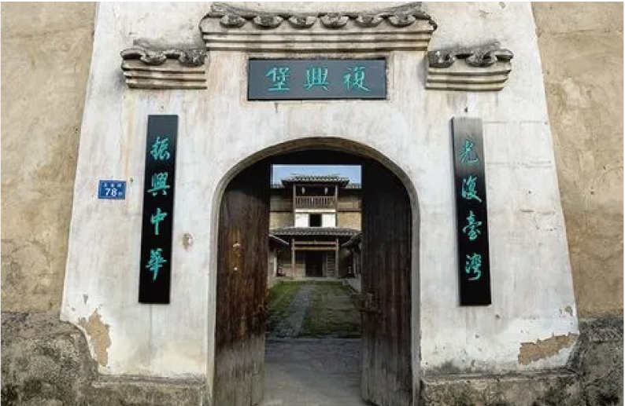
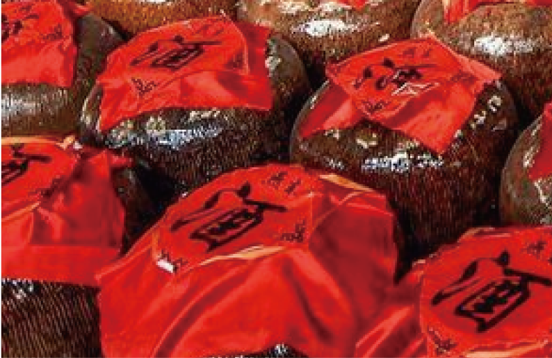

吉山
JISHAN
依山傍水，如画吉山
这里，古树、古桥、古民居，古韵悠扬；这里，好
山、好水、好风光，老酒飘香；这里，倚北陵殿以
望，民风纯朴；这里，枕文川溪而眠，静好时光
景点推荐
吉山园区介绍
吉山 ，位于福建省永安市西南，距市区仅4公里，是全国首批中国传统村落，福建省首批“历史文化名乡”和东南抗战文化中心。1938年至1945年抗日战争时期，福建省政府内迁永安长达七年半之久，当时在上下吉山村内就有40多个省直机关驻扎在吉山，包括省主席公馆及其防空洞、最高法院闽浙赣分庭、省高等法院、省教育厅、财政厅、卫生处、农业改进处、国立福建音乐专科学校、东南出版社、保安八团司令部（羊枣之狱）等抗战旧址。在省政府内迁永安的时间里，时值第二次国共合作期，许多军政要员、进步人士、文化名人群贤毕至，少长咸集，大家团结在中国共产党倡导的抗日民族统一战线旗帜下，出刊物，建学校，搞活动，使永安成为我国东南半壁的文化人士荟萃之地，成为抗战时期与重庆、桂林齐名的三大抗战文化中心之一，至今保存许多抗战文化旧址。
东方月
材排厝

复兴堡
国立音专旧址
刘家祖屋
轰炸弹遗址
特色美食
艾馃

吉山老酒
芋包